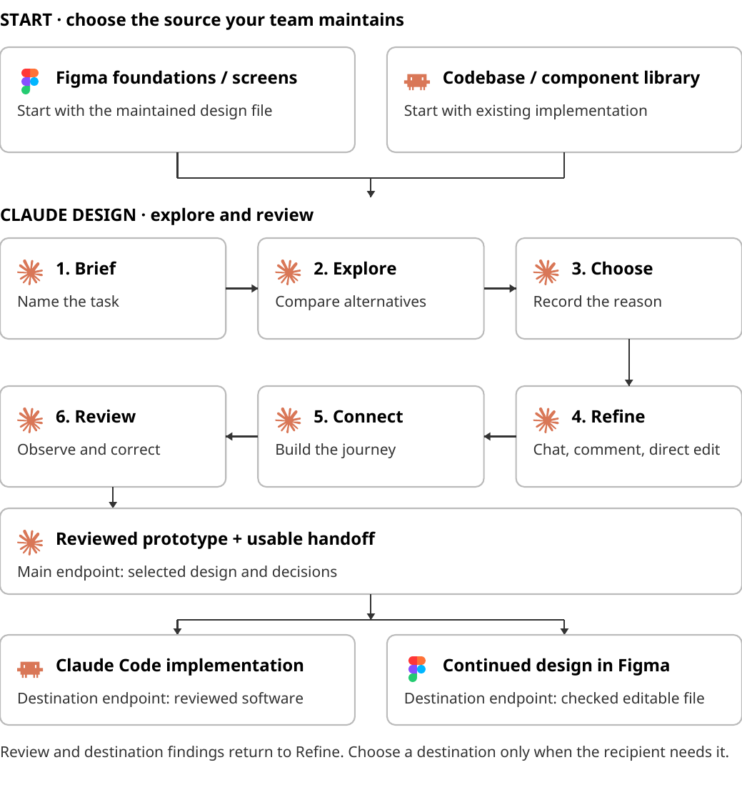

Claude Design Field Guide
Explore, refine, and hand off an interactive product design
Michael Long, surfaces.systems
Contents
- Orientation
- Choose the task and starting material
- Bring your system into Claude Design
- Explore design directions
- Refine the design
- Build the connected experience
- Review with people
- Hand off to Claude Code
- Continue in Figma when needed
- Run the guided exercise
- Appendix A: Brief and decision record
- Appendix B: Supporting engineering checks
- Further reading
- Changelog
Orientation
Use Claude Design to explore a product change, compare directions, refine a connected experience, and prepare the selected design for its next owner. Begin with the design foundations and screens your team uses in Figma, or with the components and product behavior already implemented in code.
The recurring exercise is Velori, a personal-robot configurator. A shopper chooses a finish, face, expression color, and accessory. Your task is to explore how the shopper should review those choices, return to edit, and add the configured robot to the cart. Keep Velori's identity and product imagery while making the review easier to understand and edit.
Finish the main exercise with a reviewed interactive prototype, a decision record, and a usable handoff. Continue to Claude Code when the next job is implementation. Continue in Figma when the next job requires editable design work there. Each destination has its own completion check.
Choose your starting route
Starting material | Preparation | What Design receives |
|---|---|---|
Figma foundations and screens | Select the relevant pages, components, fonts and assets | A visual system and a starting screen |
Existing codebase and component library | Select the frontend library, tokens, assets and baseline behavior | Implementation context for the same design task |
You need access to Claude Design in your intended account and organization. For a Figma route, use a Figma account and a copy you can inspect. For a Code route, use Claude Code and a local project you can run. Download the Velori exercise materials; no author-private organization or Figma file is required. Import the supplied native file into your own Drafts when you need to work in Figma.
The walkthrough targets the standalone Design beta at claude.ai/design/. Claude also documents Design in conversations, Artifacts and Claude Code. Controls and system migration differ between those experiences. Follow one surface throughout a run, and record which surface you used. See the current Design guide.
The workflow

Figma foundations/screens or an existing codebase/component library feed the same Claude Design loop: brief, explore, choose, refine, connect, and review. The main endpoint is a reviewed prototype ready for handoff. A selected destination can lead to an implementation in Claude Code or continued design in Figma. Review findings return to the Design loop.
Point | Working tool | Observable result |
|---|---|---|
Start | Figma or existing codebase | Named source material and a bounded user problem |
Design loop | Claude Design | Compared alternatives and a coherent interactive journey |
Main endpoint | Claude Design and people reviewing the design | A reviewed prototype and recorded decisions |
Engineering destination | Claude Code and the recipient's project | An implementation reviewed against the selected design |
Design destination | Figma | Editable work with required library relationships inspected |
The chapter sequence is the author's synthesis of official capabilities and reported practice. The exercise asks you to demonstrate your own result. A screenshot, a successful import, or a generated explanation cannot establish that an interaction works.
Begin with your source material, explore and review in Claude Design, then choose the handoff your recipient needs.
Choose the task and starting material
Start with a user problem and the source your team actually maintains.

Define a small change that a person can review. "Improve the product" leaves the screen, user task and desired behavior unspecified. "Help a shopper review a configuration, edit without losing choices, and add the robot to the cart" gives the design a clear job.
Write the brief
Name the person, the action, the problem, and the decisions you want to explore. Identify the behavior and visual identity that must remain stable. Keep payment, inventory, accounts, shipping, and order submission outside the Velori exercise.
A Velori shopper has configured a robot and wants to review the choices before adding it to the cart. Explore alternatives for reviewing that configuration and returning to edit. Preserve the product identity, real imagery, finish, face, expression color and one-accessory rule. End with an explicit Add to cart action and confirmation showing the configured robot, all four choices and quantity one. Keep payment, shipping and order submission outside the exercise.Use a non-default fixture throughout review: Graphite finish, Simple face, Amber expression, and Carry bag. The fixture makes stale imagery or a reset to defaults easier to notice. The chosen design must also work when no accessory is selected.
Name what each source owns
Decision | Source to inspect |
|---|---|
Brand, type, component anatomy and layout patterns | Maintained Figma foundations or design-system guidance |
Existing runtime behavior and component API | Running application and implementation library |
New review hierarchy, content and navigation | The brief and the selected Design direction |
Required handoff format | The recipient's next task and working tool |
Resolve disagreements before generation when they affect the task. If the Figma button and the running app use different radii, record which version the prototype should follow and why. A model should not settle an ownership decision by silently blending the sources.
Keep the answer out of the prompt
Use foundations, components, the configurator and source assets as starting context. Keep completed review layouts, solution prompts and implementation answers beside the exercise for later comparison. An answer key supplied at the start prevents you from seeing which review hierarchy Claude would propose from the starting screen.
The starter retains its original source pages. Work in a duplicate or separate project. Record the input filenames and the destination so another reviewer can tell which result belongs to this run.
Chapter checkpoint
You have a brief, named starting material, a non-default fixture, and a recipient or review audience. The completed answer has not entered the initial context.
Official Design documentation, reported practice and the Velori exercise. Sources are listed in Further reading.
Bring your system into Claude Design
Inspect the imported result before asking it to carry a new design.

Choose the setup route that matches your source. Anthropic's setup guide describes Figma and asset input for visual foundations, and /design-sync for existing React systems. Inspect the extraction rather than assuming both routes produce equivalent components.
Bring in Figma foundations
In the standalone experience, open Design systems, choose Create design system, and select Create here. The setup form accepts a .fig file alongside fonts, logos and assets. Supply the company or system name and explain what the product does. Include the starting screen so Claude sees how the system is used.
The Velori trial attached four source pages and extracted 16 component families. The Figma source has 11 text styles, but Design reported none on import. It reconstructed the type scale from the Foundations notes and estimated the Product size. Compare the imported text against Figma before using it as a reference; the source Product style is 27px, while the import estimated 28px. Arimo and Lora load through Google Fonts; their binaries are not inside the native file.
The setup description mistakenly requested violet. The importer found no violet token and kept the Ink primary action specified by the Figma rules. Correct the brief when it conflicts with the named source. Do not add a new accent to make the two agree.

Use the exercise starter rather than the companion's completed Store page. Attach licensed fonts separately when the source only references a font family. Record any substitution. Keep the system private during the trial and confirm the selected system before starting a product project. This walkthrough explored files in a separate trial/ directory inside its isolated system project. The UI offered team publication for new-project use; private selection from a separate product project was not tested. An organization default may belong to a different product.
Inspect the resulting system's colors, typography, control shapes, selection marks, product photographs, and one representative component. Compare a generated starting screen with the source at the same viewport. An extraction can preserve colors while losing component anatomy or asset composition.
Bring in implementation context
When the source is a working React library, open its project in Claude Code and use the native /design-sync command. Supply the component library, styles, tokens, images and usage guidance needed for the configurator. Exclude the completed Review implementation from baseline context.
The bounded code-first comparison used an isolated copy of the earlier code-derived system. It reused eight exported Velori components and preserved the four choices when Amber changed to Mint. Its Arial/Georgia stacks differed from the Figma route's Arimo/Lora families. The comparison did not repeat the full connected journey. Its choices survived navigation, but they reset after a page reload.

Keep detailed file selection and runtime adaptations in the package's supporting material. The main reader should know what is being imported, why the selected source matters, and which gaps remain. Inspect the returned system and generated starting screen before exploring the new review.
Correct the smallest relevant gap
If a selected choice uses the wrong mark, identify the source component or reference and ask for that correction. If imagery is missing, repair the asset input before judging the layout. If the system is from the wrong organization, stop the generation and choose the intended destination.
Compare this starting screen with the supplied Velori configurator. Check the brand, heading, choice groups, expression menu, selected marks, button and configured product image. Name mismatches and missing source material. Correct the source rule for each mismatch before proposing the new review screen.Keep a before-and-after image when the correction matters to later screens. Regenerate one adjacent surface to check whether the correction carries forward. Do not turn the exercise into an exhaustive audit of every component that the task does not use.
Chapter checkpoint
The starting screen uses the intended visual system. Required assets load, substitutions are visible, and unresolved import gaps have a named owner.
Official Design documentation, reported practice and the Velori exercise. Sources are listed in Further reading.
Explore design directions
Compare different ways to help the shopper review and edit.

Ask for alternatives that differ in how the person completes the task. Three copies with different colors do little to expose a useful decision. Compare information hierarchy, image prominence, editing behavior, and the relationship between review and confirmation.
Generate two or three alternatives
Ask Claude Design to keep the alternatives separately identifiable. Record which files or views were created. Export a copy of any direction you need to preserve before requesting a large change. Current Design documentation describes alternatives and warns that version history is not available.
Explore three directions for reviewing a configured Velori robot. A: a compact summary beside the product. B: a dedicated review screen with clear edit links. C: a guided review that groups the choices. Keep the same choices, product imagery and visual language. Make the differences about hierarchy and interaction. Label and retain each direction so we can compare them before refining one.Compare the actual views
Question | Evidence to examine |
|---|---|
Can the shopper identify the configured product? | Product image, caption and selected values agree |
Can the shopper find an incorrect choice? | Labels and hierarchy make the four choices scannable |
Can the shopper edit that choice? | The edit action has an understandable destination |
Does the screen overstate completion? | Confirmation copy avoids an implied order or payment |
Does the design fit a narrow viewport? | Essential choices and actions remain usable |
Operate each alternative. A promising composition may hide a confusing Back action or erase choices when the shopper edits. Compare the same fixture so the layout difference is visible.


The trial compared A, a compact summary with editing in place; B, a dedicated review with a return to configuration; and C, a guided check of three choice groups. Each approach was operated. B was selected because review and configuration have clear roles. The accepted tradeoff is an extra transition to edit a choice.
Select with reasons
Record one sentence for the selected direction, the tradeoff you accepted, and the refinement to make next. For example: "Choose the dedicated review screen because each choice is easy to scan and edit. Keep the image smaller on narrow screens so the summary and action appear sooner."
Preserve rejected directions as comparison evidence. Ask Claude to refine the chosen direction by name. A selection record prevents later feedback from accidentally combining all three approaches.
Chapter checkpoint
You have separately visible alternatives, a selected direction, a reason for the choice, and one concrete refinement priority.
Official Design documentation, reported practice and the Velori exercise. Sources are listed in Further reading.
Refine the design
Use conversation, targeted comments and direct editing for distinct changes.

A first generation establishes a direction. Refine the selected screen until its hierarchy, content and interaction make the task clear. Keep the fixture and selection rationale visible while changing the design.
Use chat for a structural change
Explain the behavior and the reason when a change affects the summary, image and actions together. Ask for the result, then inspect the screen and the journey that changed.
Refine direction B. Keep review separate from configuration. Put the four choices in a scannable summary and place an Edit configuration action beside them. On narrow screens, show the summary before secondary product details. Preserve selected values when returning to the configurator.Avoid accepting "fixed" as the result. Follow the affected navigation and compare the selected values yourself. Keep structural changes small enough that you can understand their consequences.
Use a comment for a local correction
Select or comment on the exact target in the canvas, then name the change and its purpose. "Make this better" gives no deciding fact. "Keep the accessory label and selected value together so Carry bag is easy to confirm" gives the correction a job.
The trial comment targeted "Review your Velori." and requested "Check your configuration" at the same size. The saved file and reloaded view showed the new heading.

Save the text of a consequential comment in the decision record. Anthropic documents intermittent comment persistence problems. If a comment disappears or is missed, send the same feedback through chat and verify the rendered result. A missing comment is a feedback-delivery failure, not proof that the design request was rejected.
Edit directly for a quick visual adjustment
Use the canvas's direct editing controls for a local alignment, size, spacing or copy adjustment that the selected surface supports. Observe which element is selected before changing a property. Check the full composition afterwards, including a narrow viewport.
The direct editor changed the paragraph in the preview, but Save reverted it. The surface warned that automatic edits were unsupported for that file. The same copy request succeeded through chat. Check the saved file or reload before counting a direct edit as complete; use a documented fallback when the native editor cannot save the change.

Direct editing does not settle interaction behavior. An action moved within the layout still needs a useful label, working destination and visible focus. Record the before and after when an edit materially changes the screen.
Recheck the chosen direction
After a batch of changes, return to the selection rationale. Check whether review is still easy to scan and edit. Remove a refinement that improves one detail while obscuring the primary task. Keep a short decision record rather than a transcript of every prompt.
Chapter checkpoint
The selected design has a structural refinement, a verified local correction, and either a saved visual edit or a recorded editor limitation with a verified fallback. The original selection rationale still describes the result.
Official Design documentation, reported practice and the Velori exercise. Sources are listed in Further reading.
Build the connected experience
Make the adjacent screens behave as one shopper journey.

Develop the surfaces needed to experience the selected direction. For Velori, the configurator, accessory details, review and cart share the same four choices. Each surface should make its place in the journey clear.
Connect the screens
Connect the selected review direction to the supplied configurator and accessory details. Configure opens Review configuration. Edit returns to Configure with the choices retained. Browsing Charging dock details while Carry bag is selected must keep Carry bag selected until the shopper explicitly changes the choice. Add to cart saves the reviewed configuration and opens a cart confirmation with the product image, all four choices and quantity one. Keep the product image, caption and summary consistent across the journey. Editing a cart item and adding it again updates that item rather than adding a duplicate. Keep payment and order submission outside the exercise.Label the primary action Continue in both Configure and Edit; it opens Review with the current choices. Reset fixture restores the starting choices, clears the teaching cart and returns to Configure. Define whether Back returns to the previous surface or always to configuration. A review action should not silently confirm an order. Give Configure, Review, Edit, Add to cart, Back and Retry an observable result.


In the trial, Dock details previewed Dock while Carry bag remained selected. Returning to configuration and review retained the selected choices.
Finish with Add to cart
The shopper journey is Configure -> Review -> Add to cart -> Cart confirmation. Accessory details and editing are side paths that preserve the selection. The final action adds the configured robot to the cart; it does not place an order.
Show the robot image, finish, face, expression color, accessory and quantity one on the confirmation. Keep a snapshot of the reviewed choices so later configuration changes cannot silently alter the cart item. Provide Edit cart item to restore its choices to the configurator. In this single-product teaching prototype, adding an edited configuration updates the one item. Repeated activation does not increase its quantity.
Retain the item after a reload in the same browser session. Treat an empty cart as a recoverable starting point with a Configure Velori action. If the staged unavailable accessory is selected, require another accessory or None before adding. Payment, shipping, taxes and order submission are outside the task.
The October 6 author trial ended at configuration confirmation. The cart requirement is an October 7 exercise revision. Both the React sample and standalone offline answer key demonstrate the cart endpoint. The current editable Figma answer key shows static Review and Cart frames; the earlier Claude Design screenshots keep the original trial scope. No new Claude Design generation trial is claimed.

Add a recovery state
When an image is unavailable, keep the configuration summary visible. Explain what could not load and offer a useful recovery or editing action. Retry should attempt to load the asset rather than showing a success message unrelated to a request.
State or transition | Design requirement |
|---|---|
Configure to review | The four choices are retained |
Review to edit | Selected controls agree with the summary |
Browse another accessory | Browsing does not select the accessory |
Review to cart | One configured robot appears with its four choices and quantity one |
Edit cart item | Choices remain selected; adding again updates the same item |
Repeat Add to cart | The teaching prototype keeps one item, without a duplicate |
Reload the cart | The saved item remains during the same browser session |
No accessory | The summary and cart state the choice clearly |
Image unavailable | Choices and navigation remain usable |
Narrow viewport | Summary, edit and continuation remain reachable |
For a prototype, distinguish demonstrated behavior from simulated behavior. State when an unavailable state is deliberately staged. Test a real missing resource before claiming image-request recovery. Keep prototype-only shortcuts in the handoff record.
The staged unavailable fixture marked Carry bag unavailable and replaced confirmation with Choose Dock or Choose None. Choosing None retained Graphite, Simple and Amber. The image-error fixture deliberately skipped its first request; Retry then made a successful browser image request. This trial did not demonstrate recovery from a real missing resource.


Protect consistency during generation
Ask Claude to reuse the chosen direction rather than redesigning every new screen. Review the next surface for typography, spacing, selected marks, content and action hierarchy. A screen can be attractive in isolation and still break the journey's vocabulary.
Chapter checkpoint
You can complete configure, details, review, edit and add to cart. Selected values remain consistent. The unavailable state and narrow layout have been inspected in the interactive result.
Official Design documentation, reported practice and the Velori exercise. Sources are listed in Further reading.
Review with people
Observe the task, resolve confusion and preserve the selected decisions.

Review the prototype as a task. Ask someone to configure a robot, inspect the summary, change one choice, browse an accessory, return and add the configured robot to the cart. Ask the reviewer to check that the cart item matches the reviewed choices. Give the person the goal, then observe where the design explains itself and where you have to intervene.
Prepare a reviewable prototype
Open the presentation or preview mode and verify the starting point. Remove answer-key overlays and setup panels that the reviewer does not need. If using a share link, inspect its access settings and have the recipient open the actual link. Exported HTML or an archive can provide another route, but the files still need a recipient test.
The author's private system URL is context for the trial record. Readers do not need access to that private URL. A public exercise download should carry the necessary starting material and clear account requirements for each chosen route.
Check response and keyboard behavior
Use a wide and a narrow viewport. Check long labels, summary wrapping, product-image proportions, action placement and page overflow. On the narrow view, follow the task rather than only inspecting the first screen.
Use Tab and Shift-Tab through actions and choices. Open and close the expression menu with the keyboard. Confirm visible focus and an understandable return destination after details or editing. A keyboard failure affects the prototype review and becomes an explicit implementation requirement.
The connected trial was operated at 390 × 844 pixels. Review, editing and Dock details retained the choices without horizontal overflow. Keyboard activation worked for the navigation actions. A fresh recipient opening also verified radio-arrow selection and retained that change after reload. These checks support a task review; they do not replace observing another person.


Record observations and decide
Observation | Decision record |
|---|---|
Reviewer misses an edit action | Change its placement or wording, then retry the task |
Reviewer mistakes review for an order | Clarify the heading and confirmation language |
Summary disagrees with imagery | Repair the shared choice state or asset mapping |
Narrow view hides the main action | Rework hierarchy and scrolling, then repeat the journey |
Prototype limitation prevents a test | Name the limitation and assign the next test |
Keep findings concrete. "The reviewer opened Dock details and assumed Dock was selected" supports a correction. "The experience needs polish" does not tell anyone what to change.
The main endpoint is a reviewed prototype with a decision record and known limitations. Record unresolved High, Medium and Low issues. Do not label the prototype ready for handoff when an unresolved issue prevents the core task.
Chapter checkpoint
A reviewer has completed the task. Material confusion is resolved or assigned. The prototype, decisions and limitations are ready for the selected recipient.
Official Design documentation, reported practice and the Velori exercise. Sources are listed in Further reading.
Hand off to Claude Code
Give the implementation owner the selected design and its behavior.

Choose this route when the next job is software implementation. Deliver the selected direction, the working prototype, the maintained component source and the decisions that affect behavior. The recipient should understand what to preserve and what to build.
Capture the handoff
Use the handoff or export control available in the tested Design surface. Current documentation lists local coding-agent and Claude Code Web routes, plus HTML and ZIP exports. Record the selected method and the received files. Keep the generated source separate from adaptations needed to run it in the recipient's project.
Include the fixture, navigation destinations, image behavior, responsive priorities and unresolved prototype limitations. Give the recipient the actual selected design rather than all rejected alternatives as equal requirements.
Implement the selected Velori review direction in this product project. Inspect the existing components, tokens and state ownership before changing code. Preserve the configurator, product assets and four choices. Map the design to the maintained library. Keep configure, details, review, edit and cart consistent. Add the reviewed configuration to the cart with quantity one, retain it after a same-session reload, and prevent duplicate items from repeated activation. Editing and adding again updates the existing item. Do not implement payment or order submission. Explain necessary adaptations and test the interactive journey, keyboard behavior and narrow layout.The tested Share menu offered a local-agent Claude Code prompt, a project ZIP and standalone HTML. The prompt copied successfully and named the selected entry and imported files. The ZIP preserves generated source; its React and Babel scripts require network access. The standalone export embeds the scripts and product assets. Its Retry reloads bundled data and therefore cannot demonstrate a failed network request.

Verify recipient usability
Open the received packet from a fresh local folder. Follow its README. Confirm that required dependencies and assets are present and that the selected view opens. Record any network or account requirement. A handoff prompt copied successfully does not prove the prototype can run.
Review the implementation against the selected design at matching viewports. Inspect component use in source when library reuse matters. Visual similarity cannot identify a component or establish controlled state. Record intentional deviations and get a design decision on changes that affect the task.
Detailed package hashes, runtime adapters, full configuration combinations and storage tests belong in supporting engineering checks. Apply them when the recipient's implementation needs those guarantees; they are not the entry requirement for exploring the review design.
Chapter checkpoint
The recipient can open the handoff and understand the selected design. Implementation review records component mapping, tested behavior, deviations and remaining work.
Official Design documentation, reported practice and the Velori exercise. Sources are listed in Further reading.
Continue in Figma when needed
Inspect editable output and restore the design relationships the team needs.

Choose this route when the team needs editable Figma work for further design, library maintenance or review. Figma may also have supplied the starting foundations. Returning to Figma is a destination decision, not a compulsory final stage for every Claude Design prototype.
Choose a supported bridge
Inspect the export controls in the Design experience you used. Do not promise a native Figma export because another tool can capture a web page. Figma's code-to-canvas workflow describes capturing rendered UI into editable design layers through its MCP tooling. A capture or manual reconstruction is a separate bridge with its own output to inspect.
Keep the source file and existing libraries. Add selected views in a separate page or working copy. Record the captured URL, viewport and design revision so the recipient knows which prototype the frames represent.
The October 6 trial captured the selected Review into editable layers, then restored Velori Brand, Product Preview and Primary Button instances. It rebuilt the repeated summary row and outlined secondary action as local components and reapplied the source text styles. The original screen had 22 styled text nodes, 10 instances and 65 nodes with variable bindings. It used Arimo and Lora, with the source Product style restored to 27px.
The October 7 correction directly edited that Figma continuation. Review now shows Add to cart, and a Cart frame shows the robot image, Graphite, Simple, Amber, Carry bag and quantity one, with Edit cart item and Continue configuring. Each frame has 24 styled text nodes, 10 instances and 70 nodes with variable bindings. Both retain Arimo, Lora and the 27px Product style. The Figma frames have no prototype connections or choice-state wiring. Continue design there, or build and test those relationships before calling the answer key an interactive Figma prototype. The correction does not establish a new Claude Design generation trial.


Inspect separate kinds of fidelity
Check | Evidence |
|---|---|
Visual match | The selected view agrees at the captured viewport |
Editable content | Text, layout and image layers can be changed |
Component relationships | Required instances point to intended main components |
Token relationships | Required values use intended styles or variables |
Interaction behavior | Prototype connections and state behavior are tested |
Editable layers do not automatically preserve the source component library or prototype wiring. Reconnect the required relationships and document what was rebuilt. Code Connect can supply implementation context when mappings are maintained; it is not a substitute for inspecting the received file.
Use Figma plan features only when the chosen deliverable requires them. A variable-driven native prototype may have additional plan requirements. A Design review prototype should not inherit those requirements merely because the team's foundations were created in Figma.
Chapter checkpoint
The Figma recipient can edit the selected design. Required instances, styles, variables and prototype behavior have separate results. Missing relationships are recorded as remaining work.
Official Design documentation, reported practice and the Velori exercise. Sources are listed in Further reading.
Run the guided exercise
Complete the design loop and the handoff your recipient needs.

Use the Velori starting materials to explore a review experience. Keep the completed Store example out of initial generation context. Compare the answer only after selecting and refining your own direction.
Follow the design loop
Choose the Figma-first or code-first route and record the input files.
Write the review brief and the Graphite, Simple, Amber, Carry bag fixture.
Create an isolated Design destination and inspect the imported starting screen.
Generate two or three distinct directions. Operate them and choose with reasons.
Refine the selected direction through chat, a targeted comment and a direct visual edit. Verify that each change saves; record unsupported editing and its fallback.
Connect configuration, details, review, edit and Add to cart. Confirm that the cart contains the reviewed robot and its four choices. Add an unavailable state and inspect a narrow view.
Review the task with someone. Correct material confusion and record limitations.
Export the selected prototype and decisions. Verify that the recipient can open them.
Continue to Code implementation or editable Figma work when the recipient needs that destination. Complete its own checks.
Keep a useful record
Record the chosen route, source files, Design project, selected direction, decision rationale, corrections to hierarchy, content or interaction, tested journey and recipient result. Save images before and after changes to hierarchy, content or interaction. The supplied materials include a React sample and standalone offline answer key that both reach Add to cart and Cart confirmation. The current editable Figma answer key includes static Review and Cart frames with the same four choices and quantity one. The recorded author trial is prepared for human review; it does not claim that a separate reviewer has completed the task. A complete transcript is less useful than a short record that explains why the design was selected and what remains uncertain.
Completion item | Required result |
|---|---|
Starting context | The maintained source and answer exclusions are clear |
Exploration | Alternatives are visible and a direction is selected with reasons |
Refinement | Saved changes are verified; unsupported editing and the fallback are recorded |
Journey | Configure, details, review, edit and cart agree; adding ends with one configured item |
Review | Human feedback, narrow layout and keyboard results are recorded |
Main handoff | The recipient can open the selected prototype and decision record |
Chosen destination | Code or Figma checks match the recipient's requested deliverable |
If a required native step is inaccessible, leave the inaccessible native action incomplete and name the practical action that can unblock the run. Do not substitute a local answer key for a fresh Design output or call a flattened screenshot an editable native result.
Chapter checkpoint
You have a reviewed interactive prototype and a recipient-usable handoff. Any chosen implementation or Figma continuation has a separate completion record.
Official Design documentation, reported practice and the Velori exercise. Sources are listed in Further reading.
Appendix A: Brief and decision record
User and task.
Starting route and source ownership.
Preserved visual and interaction rules.
Non-default fixture and excluded answer material.
Alternatives and selected direction.
Selection rationale and accepted tradeoff.
Corrections to hierarchy, content or interaction, and review observations.
Tested behavior and known prototype limitations.
Recipient, format and opening result.
Appendix B: Supporting engineering checks
Use the sample library inventory, system definition, source conflicts, runtime adapters and package fingerprints when preparing code input or validating an implementation. Apply the full configuration matrix, storage, reload and real image-failure checks to the implementation that claims those behaviors. Keep captured Design source immutable and adapt it in a separate folder.
Keep original and third-party notices with the supplied material. Velori's authored source and imagery use the declared MIT license; referenced fonts and icons retain their own notices. Font family names in a Figma file are not bundled font software.
Further reading
Changelog
Version 2.1.1 · October 7, 2026.
Correction or clarification. Bring the React sample through Add to cart and Cart confirmation, matching the standalone offline answer key. Both runnable examples now follow the existing exercise, including Continue, Edit cart item and Reset fixture.
Correction or clarification. Correct the editable Figma answer key to show Review with Add to cart and a Cart frame with the robot, all four choices and quantity one. The current frames now represent the existing cart endpoint, with Edit cart item and Continue configuring. They remain static, with no prototype connections or choice-state wiring.
Velori exercise materials include the corrected examples. Editable Figma Cart frame records the current static design.
Previous edition: 2.1.0 · October 7, 2026. Daytime PDF SHA-256: 03f12b39c3f94a50578e530c0193abfaf6992d4137ef24a87f2a0bd4b7fb0fa3.